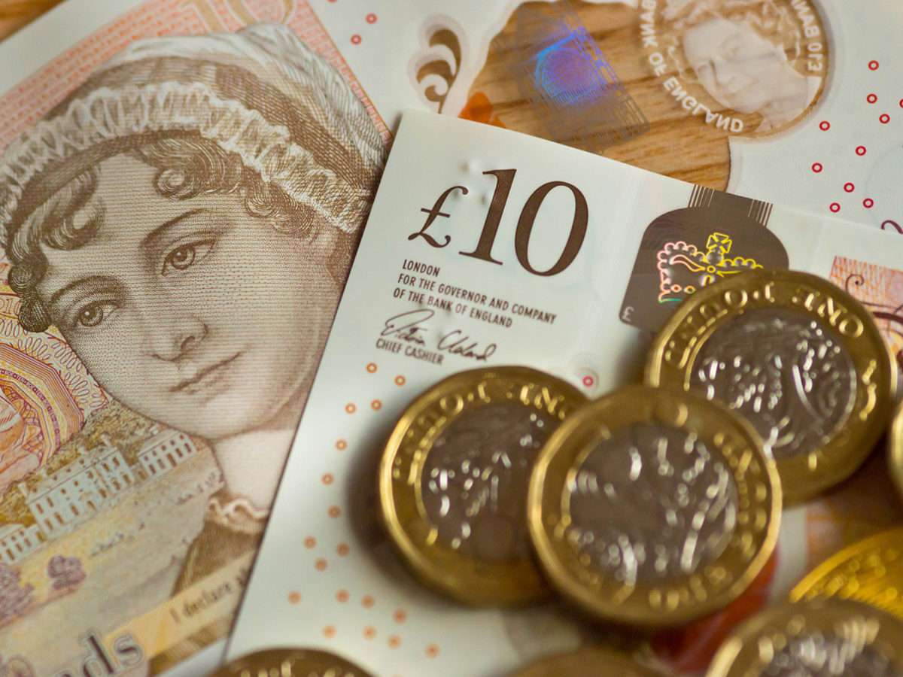

Libra
A libra esterlina é considerada uma das moedas mais valorizadas do mundo, superando inclusive
o euro e o dólar, abaixo apenas de dinar kuwaitiano, dinar bareinita, rial omanense e dinar
jordano.
Um aspecto importante da libra é o fato de ser emitida por mais de um banco, uma vez que o
padrão é único, ou seja, os bancos da Inglaterra e da Escócia operam em coordenação, embora
o comando e controle da política monetária sejam definidos somente pelo banco da Inglaterra.
A palavra libra era um termo utilizado pelas unidades monetárias de várias regiões da Europa. A palavra deriva do baixo latim libra (século X). Originalmente, esse valor correspondia a uma libra de prata.
A palavra esterlina vem do francês antigo esterlin, que originou o termo em inglês antigo stière (forte, duro, indestrutível), nome dos dinheiros escoceses do rei David I da Escócia (1123 a 1153) e do novo dinheiro inglês do rei Henrique II em 1180. Caracterizando-se, a partir dessa data, como sendo moeda cunhada em oito gramas de ouro, sendo sua conversão real do seu vale, correspondente em cédula.
A libra esterlina ou simplesmente libra (em inglês, pound, plural pounds, informal. Pound Sterling, ou pounds sterling, formal) é a moeda oficial do Reino Unido. Desde 15 de Fevereiro de 1971 e da adoção do sistema decimal, ela é dividida em 100 pence (singular: penny). Antes dessa data, uma libra esterlina valia 20 shillings (que valiam por sua vez 12 pence cada um), ou 240 pence.
